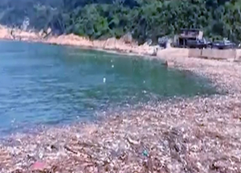

位於台灣離島馬祖的復興沙灘，每年仲夏不少遊客慕名而來，等入夜欣賞被美國有線新聞網絡（CNN）列為世界15大奇景之一的「藍眼淚」，但近年卻迎來是一波波膠樽、發泡膠及廢木。垃圾令海水變得污濁濃稠，夜光藻發出的微弱藍色螢光難以看到，夢幻景觀慘遭摧毀。
每年漂來1,800噸垃圾
台灣離島受黑潮和季候風等影響，東亞與南亞海洋垃圾漂來，慘變垃圾之島。荒野保護協會統計歷年，台灣全島海岸線被180萬噸海洋垃圾包圍，多個離島陷入生態災難。重災區金門、澎湖、連江等變成「垃圾海」，三個縣政府統計，每年有1,800噸垃圾從大陸等地漂來，相等於3.5噸大貨車，在海灘上倒垃圾1,000多次，當中多是發泡膠、膠樽及膠袋，不少有簡體字標籤，永遠清不完。馬祖屬連江縣，當地環保局長張壽華指，每年有600至700噸海洋垃圾漂流到當地，幾乎都來自福建九龍江、閩江及沿海養殖漁業，只要對岸下大雨或刮強風，隔天海灘就有大量垃圾，清理完還要運回高雄焚化「全民埋單」。
有專程到當地看藍眼淚的遊客指這次「只見垃圾不見淚」，只好敗興而回。當地環保人士陳建盛指，近年馬祖沙灘海洋垃圾又多又臭，慨嘆大眾對藍眼淚的美麗想像，現在都是「被照片所騙」；當地小學校長王建華稱，「追淚」的遊客只好挑較少垃圾的海岸拍照。馬祖南竿島位於福建沿岸，接近福州，從台灣本島乘飛機或輪船，亦可從福州循小三通坐船到當地，其聞名於世的美景藍眼淚是因為滑鞭毛藻（俗稱夜光藻）受到外在刺激形成，當夜光藻數量越多，藍眼淚越清晰。